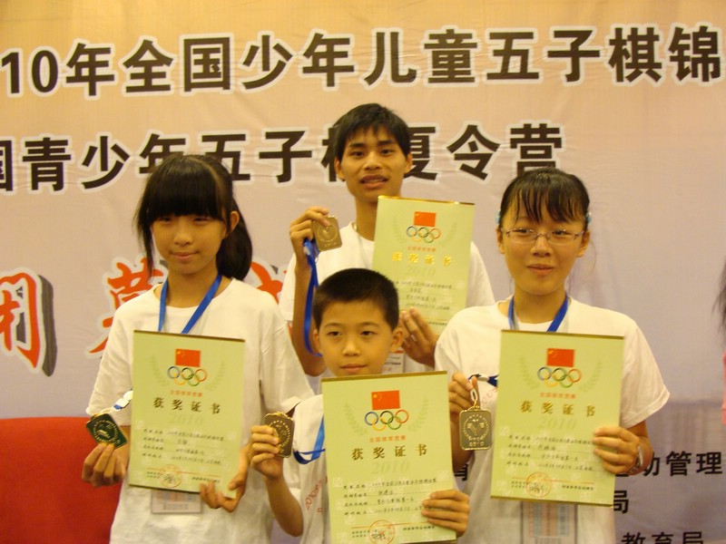

2010全少赛四位冠军的合影
#1 2010全少赛四位冠军的合影 作者：黄药师 发表时间：2010-8-17 19:07:44

后排 少年男子组冠军 朱佳晨
前排 左起 儿童女子组冠军 方静 儿童男子组冠军 张建业 少年女子组冠军 许姝怡
［此帖子已被 黄药师 在 2010-8-17 19:09:11 编辑过］
［ 无尽 于 2010-8-17 20:58:05 时奖励此帖[金币加 20 威望加1］
［ 掌棋宣传员 于 2010-8-18 19:59:07 时花20金币送鲜花一朵］
#2 Re:2010全少赛四位冠军的合影 作者：屏蔽 发表时间：2010-8-18 10:30:26
朱佳晨真变样了~#3 Re:Re:2010全少赛四位冠军的合影 作者：狠角色的软弱 发表时间：2010-8-18 10:33:32
引用：你呢~嘿嘿~都老了老了~
原文由 屏蔽 发表于 2010-8-18 10:30:26 :
朱佳晨真变样了~
#4 Re:2010全少赛四位冠军的合影 作者：第五象限 发表时间：2010-8-18 18:47:05
同为儿童组 女子组的方静咋比男子组的张建业大那么多
#5 Re:2010全少赛四位冠军的合影 作者：掌棋宣传员 发表时间：2010-8-18 20:00:07
女子儿童组的比少年组的个子高...